Self-hosted ebook & audiobook library
Omnibus indexes the books already sitting on your disk and gives them a home: a cover wall you can browse, a reader that keeps your place, a player that knows its chapters, and no account anywhere except your own server.
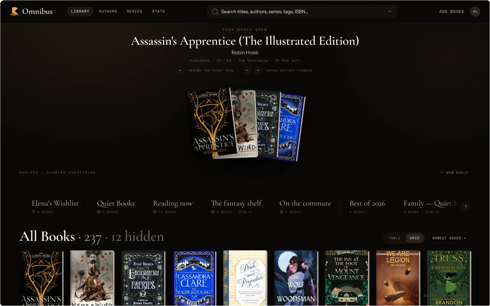
Themes
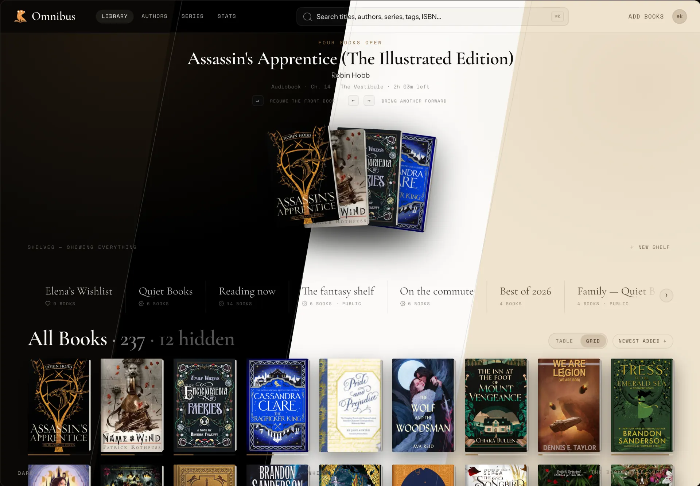
Read
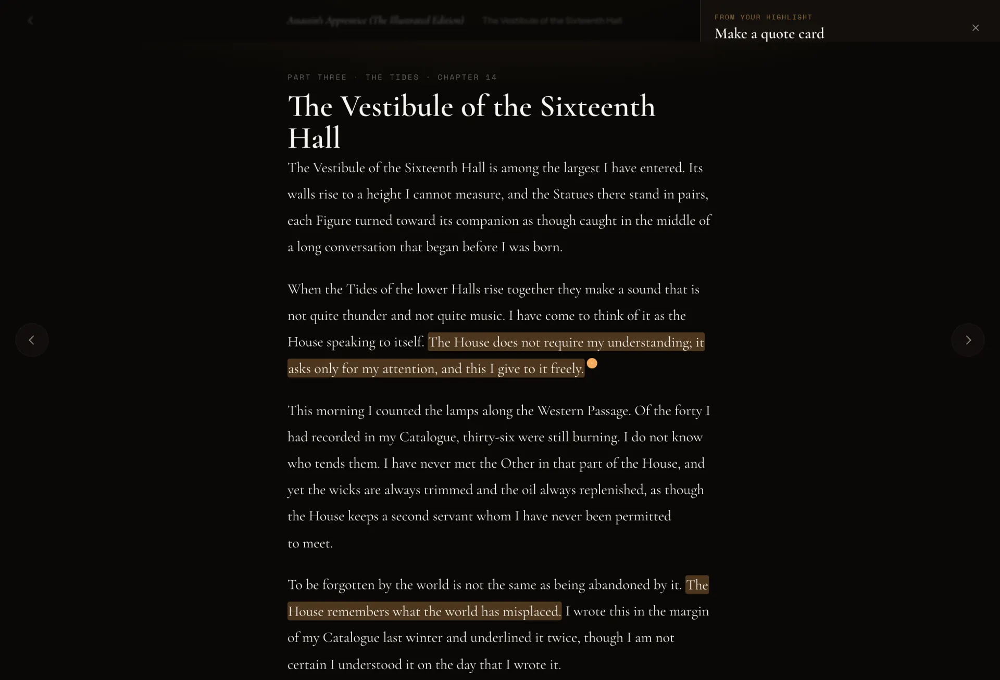
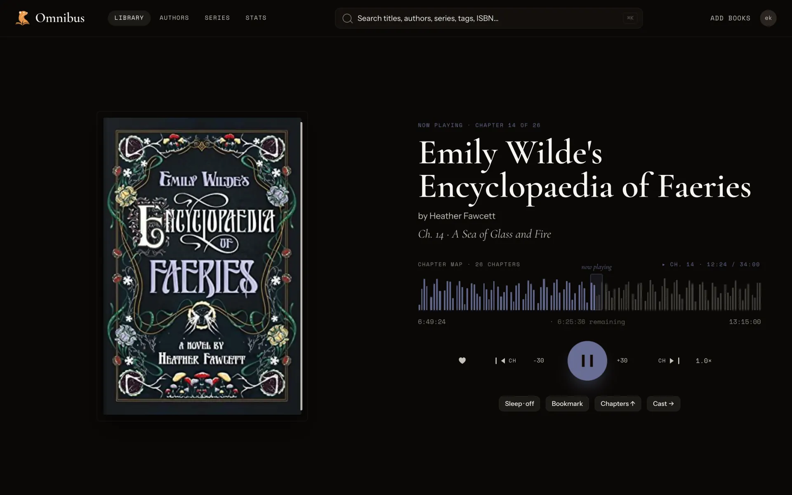
Listen
Format sync
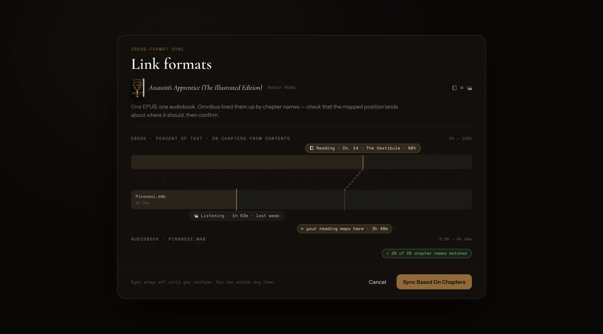
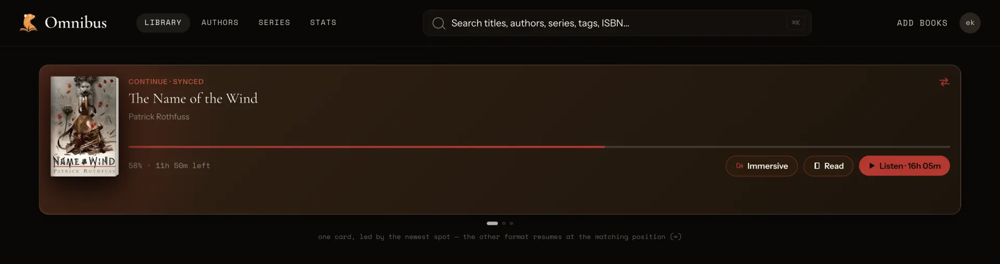
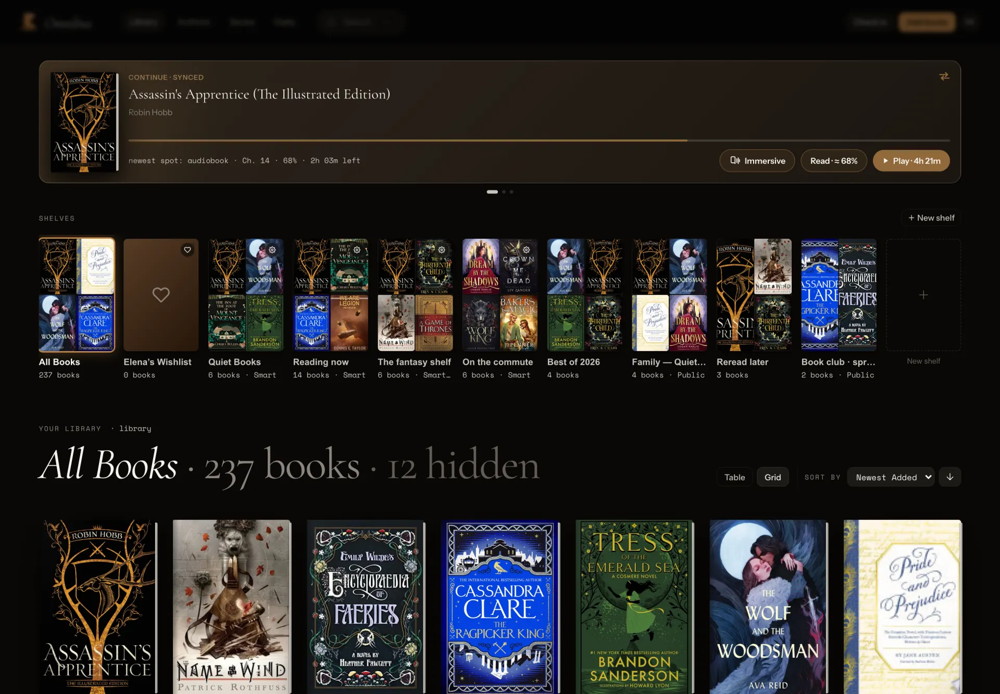
Kobo
Kindle
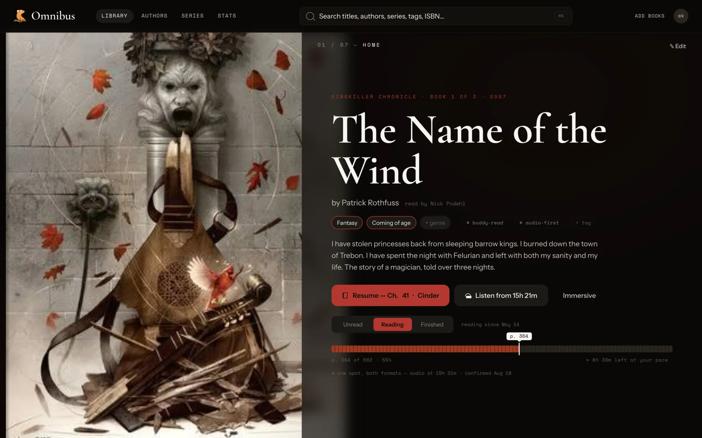
Mobile
Native Swift iOS app open for testing. WebView shell on Android. Access your library wherever you go.
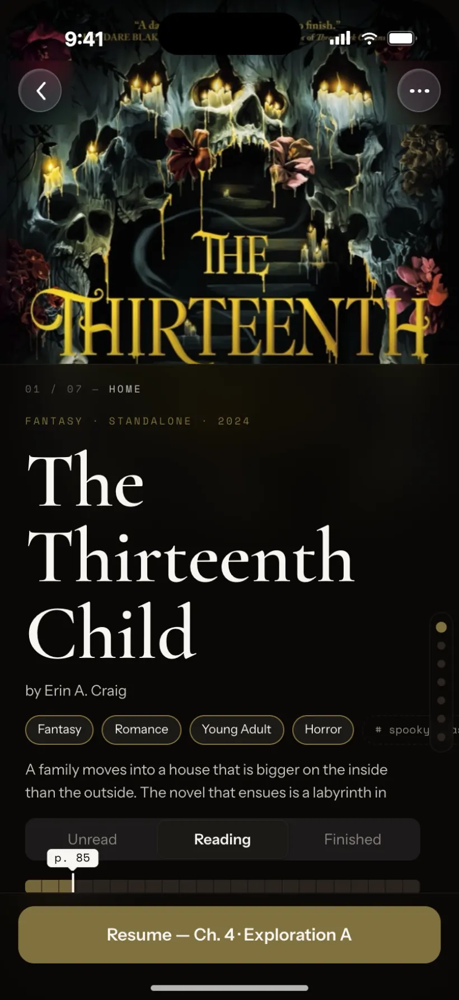
iOS · native SwiftUI
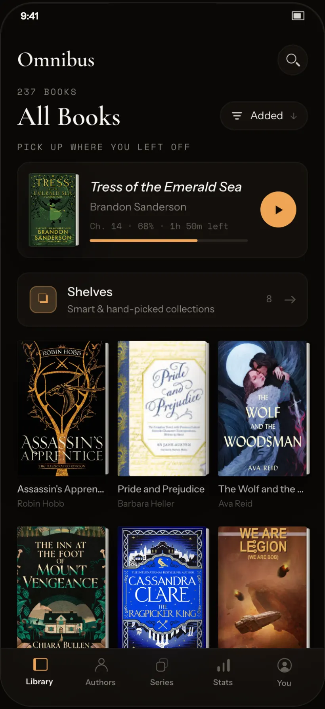
Android · WebView shell
Check-in
Scan an ISBN to say that you own the book or add it to your wishlist to buy later.
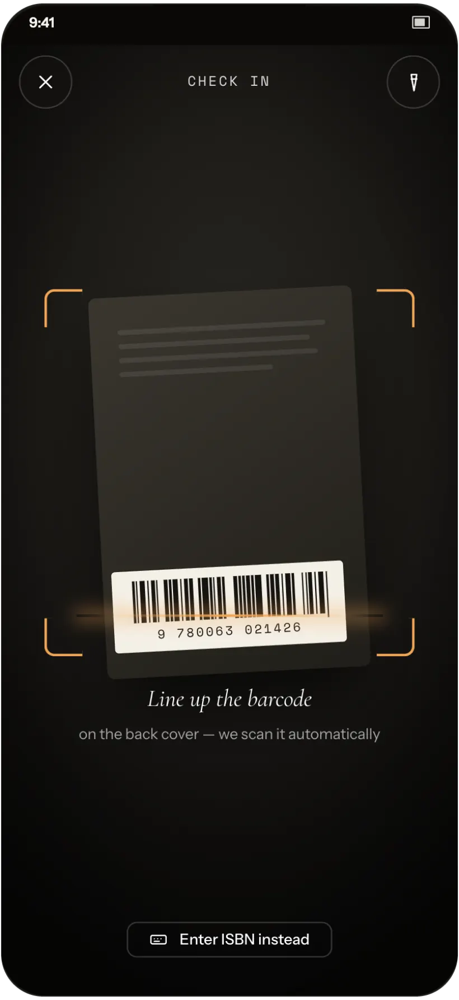
Scan a barcode
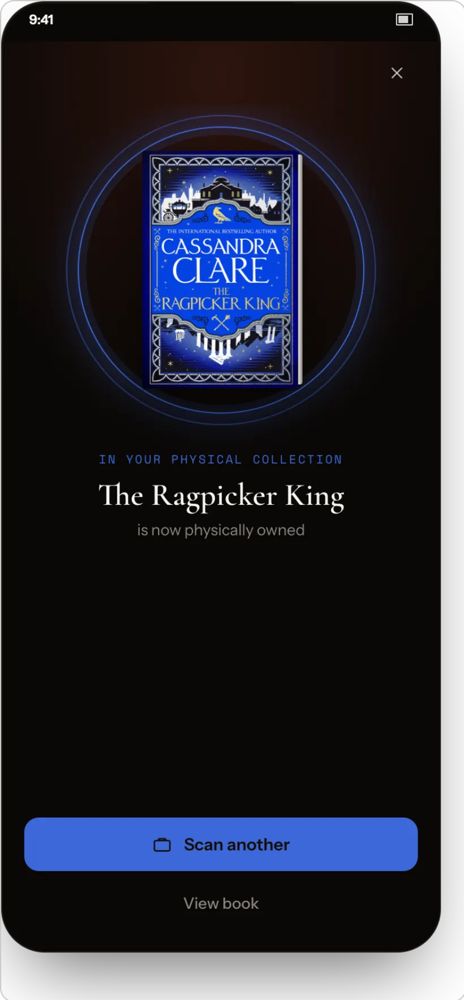
Check the copy in
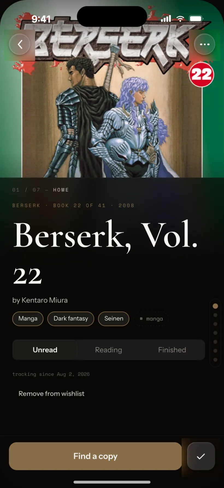
Or track it on the wishlist
Scanning
The scanner recurses through whatever you already have — nested author and series trees, loose files, mixed formats — and reads each book’s metadata out of the file itself. Your metadata edits live in the Omnibus database and will be written to exported media.
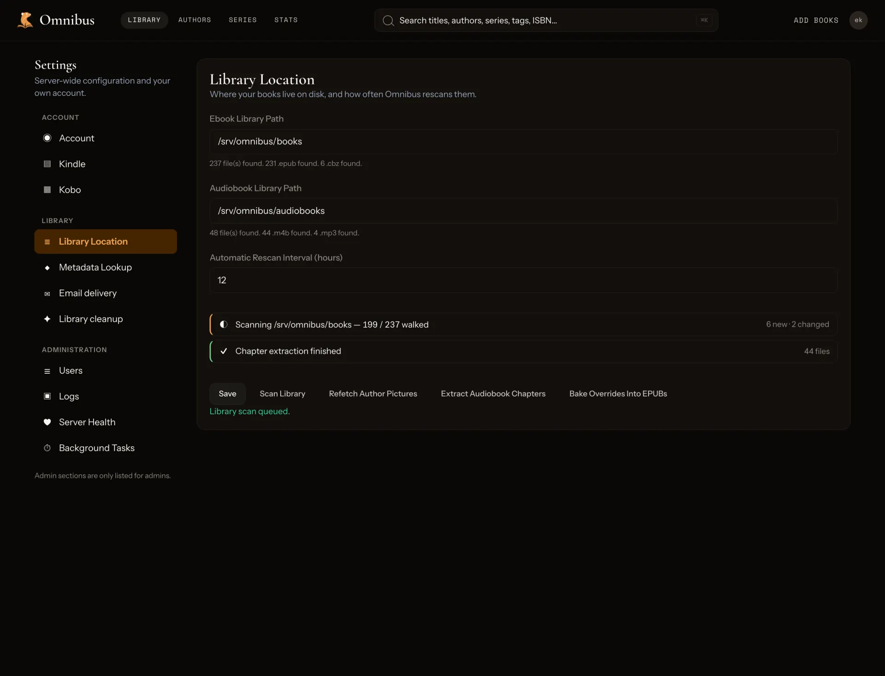
Settings · Library Location
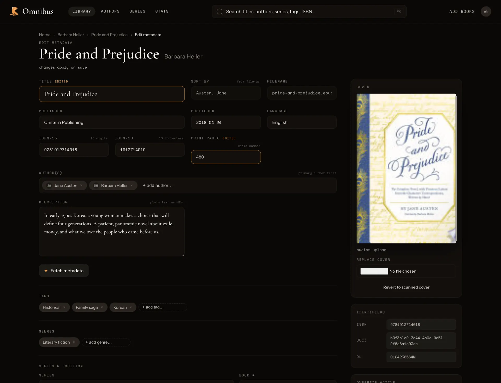
Edit metadata
Questions
Does it work with my existing Calibre folders?
Point Omnibus at the folder you already have. The Author/Title layout scans as-is, metadata is read from inside each EPUB rather than Calibre’s metadata.opf sidecar, and nothing on disk is moved or renamed.
Do I need a high-end server?
No. A 4GB Raspberry Pi is more than enough. One Rust binary, SQLite, and a bind-mount — it runs on the machine you already own. Audio is transcoded on demand, so leave a little CPU headroom if the whole house listens at once.
Does it read DRM-locked files?
No, and it won’t pretend to. Omnibus opens the EPUBs and audiobooks you own outright; locked files stay locked and nothing gets stripped.
Why not just use Calibre-web or Audiobookshelf?
Omnibus allows you to read and listen to your digital library and keep in sync with all your different devices (kobo, web, mobile). Mobile apps for Calibre-Web and Audiobookshelf only exist in third-party forms.
Open source
Point Omnibus at your existing digital library and try it out; Omnibus doesn’t tamper with any of your files or folder structure.
$docker compose up -d
Scroll